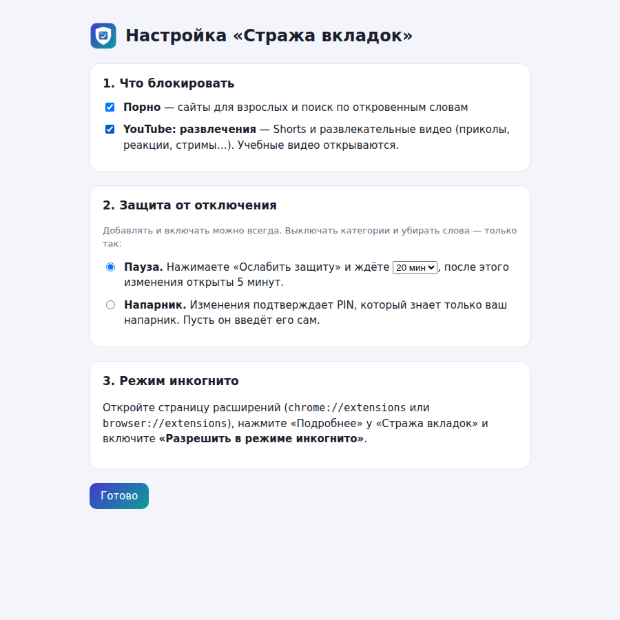
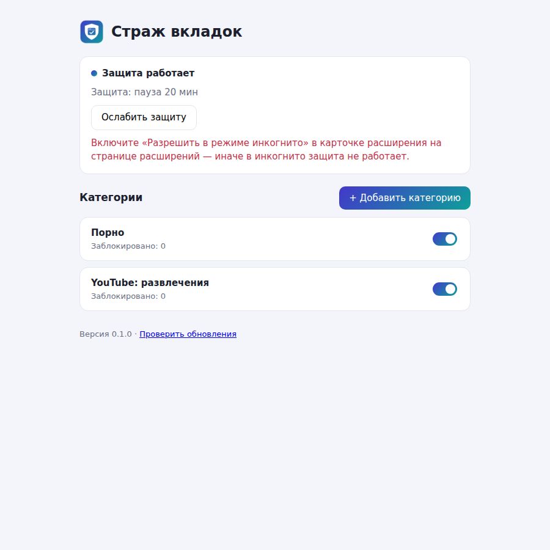

Страж вкладок
Помогает не залипать: закрывает порно и развлекательный YouTube (Shorts, приколы, стримы). Вместо такой страницы открывается Claude с поддерживающим сообщением — можно поговорить о том, что происходит. Учебные видео на YouTube открываются как обычно.
1. Компьютер с Windows (Chrome или Яндекс.Браузер)
Скачать TabGuard-PC.zip- Откройте ссылку выше и скачайте файл TabGuard-PC.zip (в разделе «Assets»).
- Распакуйте архив целиком (правый щелчок → «Извлечь все»).
- Запустите install.bat двойным щелчком. Он скопирует расширение в папку %LOCALAPPDATA%\TabGuard и положит этот путь в буфер обмена. Если Windows спросит «Защитник Windows предотвратил запуск» — «Подробнее» → «Выполнить в любом случае».
- Откройте страницу расширений: в Chrome —
chrome://extensions, в Яндекс.Браузере —browser://extensions(вставьте в адресную строку). - Включите (переключатель справа вверху).
- Нажмите , в окне выбора папки вставьте путь (Ctrl+V) в адресную строку и нажмите «Выбор папки».
- Сразу откроется мастер настройки — отметьте, что блокировать, и выберите защиту от отключения (см. ниже).
- В карточке «Страж вкладок» нажмите и включите — иначе в инкогнито защита не работает.
Мастер настройки

Защита от отключения выбирается один раз:
- Пауза — чтобы выключить категорию или убрать слова, нужно подождать (по умолчанию 20 минут). Потом изменения открыты 5 минут. Часто за время паузы желание проходит — в этом и смысл.
- Напарник — PIN из 4–8 цифр придумывает и вводит друг или близкий человек; вы его не знаете. Изменения открываются только после его PIN. После 5 неверных попыток ввод заблокирован на 30 минут.
Добавлять слова и сайты, включать категории можно всегда, без паузы и PIN.
Как проверить

Откройте youtube.com/shorts — вместо Shorts должен открыться Claude.
Обновление
Внизу настроек есть ссылка «Проверить обновления». Если вышла новая версия: скачайте новый архив, снова запустите install.bat и на странице расширений нажмите круглую стрелку у «Стража вкладок». Настройки и защита сохранятся.
2. Android
Приложение следит за открытой вкладкой в браузерах (Chrome, Яндекс, Firefox, Samsung Internet и другие) и закрывает Shorts в приложении YouTube.
Скачать TabGuard-Android.apk- Откройте ссылку выше на телефоне и скачайте TabGuard-Android.apk.
- Откройте скачанный файл. Если телефон спросит — разрешите браузеру и нажмите «Установить».
- Откройте «Страж вкладок» и нажмите → в списке спецвозможностей выберите «Страж вкладок» → включите.
- Если Android 13 или новее пишет «Ограниченная настройка»: , затем снова включите службу.
- Вернитесь в приложение и пройдите мастер: что блокировать и защита от отключения (пауза или PIN напарника).
- Чтобы телефон не выключал защиту в фоне: (на Xiaomi, Huawei, Tecno — ещё «Автозапуск»).
Проверка: откройте в браузере youtube.com/shorts — должен открыться Claude. Если включена категория
«YouTube: развлечения», Shorts закрываются и в приложении YouTube.
Пока изменения закрыты, «Страж» не даёт открыть в настройках телефона кнопки «Остановить» и «Удалить» для себя и отключить свою службу доступности — сразу возвращает назад.
3. iPhone — через «Экранное время»
Отдельного приложения для iPhone нет. Встроенное «Экранное время» закрывает приложение YouTube полностью (смотреть полезное можно на компьютере, где работает фильтр) и сайты для взрослых.
- → включите его, если выключено.
- → включите переключатель вверху.
- Закрыть YouTube:
- Удалите приложение YouTube, затем , чтобы его нельзя было быстро поставить обратно;
- или , 1 минута, включите .
- Закрыть сайты для взрослых и YouTube в браузере: .
Ниже, в разделе «Не разрешать никогда», нажмите «Добавить сайт» и впишите
youtube.comиm.youtube.com. - . Лучше всего, если код вводит напарник. Если напарника нет — придумайте сложный код, запишите на бумаге и уберите подальше. Без кода все ограничения выключаются за секунду.
Названия пунктов могут немного отличаться в разных версиях iOS — ищите похожие по смыслу.
4. Claude
Когда страница закрыта, открывается claude.ai с уже написанным сообщением: что вы чуть не залипли и хотите разобраться, что происходит. Нужно один раз зарегистрироваться — бесплатного аккаунта достаточно. Аккаунт свой, личный: разговоры видите только вы.
Можно и не писать Claude — просто закрыть вкладку. Главное, что момент «на автомате» прерван.
5. Если нужно отключить или изменить
- Внизу настроек есть маленькая ссылка . В режиме «Пауза» сначала нужно вручную напечатать фразу «Я осознанно ослабляю свою защиту» (вставить не получится), потом запустить отсчёт; пока он идёт, можно поговорить с Claude о том, зачем хочется отключить. В режиме «Напарник» попросите его ввести PIN.
- После этого 5 минут можно выключать категории, убирать слова и сменить режим защиты.
- Забыли PIN — на компьютере удалите расширение на странице расширений и установите заново (категории и статистика сбросятся); на Android — удалите приложение через безопасный режим телефона.
6. Честно об ограничениях
- Это помощник для самоконтроля, а не замок. Расширение, установленное из папки, можно удалить на странице расширений в обход паузы и PIN.
- На Android защиту обходит безопасный режим телефона. В приложении YouTube закрываются только Shorts: обычные видео и рекомендации там не проверяются.
- Работает в Chrome и Яндекс.Браузере, где установлено. В другом браузере (Edge, Firefox) фильтра нет.
- По словам в названии что-то учебное иногда закроется. Свои слова можно добавить в категорию в настройках.
- На компьютере при включённой категории «YouTube: развлечения» лента главной страницы, рекомендации справа, заставки в конце видео и полки Shorts скрыты. Поиск и подписки работают.
- Видео закрывается, если автор отнёс его к развлечениям, юмору, играм, блогам, фильмам, животным или музыке, либо если в названии есть развлекательные слова. Учебные, научные, новостные и «хобби» видео открываются. Автор может указать категорию неточно — что-то проскочит.